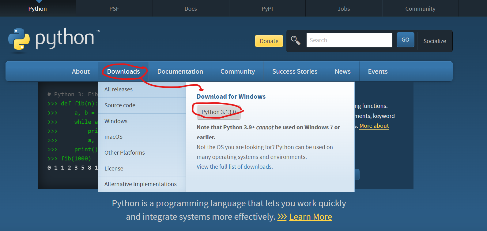

إعداد بيئة التطوير
نبدأ بالتعرف على بيئة التطوير ، وتثبيتها في جهازك؛ وذلك أنني أؤمن بضرورة إكساب الفرد أعلى قدر من التحكم في أدواته حتى يتمكن منها ومن تطويعها لعمل ما يريد بالشكل الأمثل.
بيئة التطوير هي الأدوات البرمجية الأساسية والمساعدة لعمليات كتابة الكود وتنفيذه واختباره ونحو ذلك.
أول ما نحتاج إليه هو حزمة برمجيات بايثون التي تتضمَّن الأداة التي تترجم ما نكتبه من كود بلغة بايثون لأوامِر ثنائية (صفر وواحد) لتكون مفهومة على مستوى نظام التشغيل ومعمارية الحاسب (إذ هي مستويات أكثر تفصيلاً)؛ ونسميه المُفَسِّر (Interpreter) وإن شئت قُل مترجم.
كما تتضمن هذه الحزمة برنامج pip المسؤول عن تثبيت الحِزَم البرمجية المكتوبة بلغة بايثون؛ وذلك حتى تتمكن من البناء عليها عند كتابة أكواد بايثون (وبهذا الاعتبار تسمى مكتبات)، أو فقط لاستعمال برمجيات مكتوبة ببايثون (وبهذا الاعتبار تسمى برمجيات).
أما محرر الكود فسنختار محرر (VS Codium) وهو مفتوح المصدر، وقد بنت عليه شركة مايكروسوفت محررها (Visual Studio Code) (الذي يستعمله 73.6% من 58,121 متجاوب في استبيان StackOverFlow 2024) لأن الشركة أسسته ثم فتحت للمجتمع البرمجي أكواده. وما يميزه أنه سهل بالنسبة للمبتدئ، وقوي بالنسبة للمتمكن. وتعني الشركة بدعمه وصيانته باستمرار وتطويره، كما أتيح بفتح أكواده سهولة كشف الأخطاء فيه، وأتيح بفضل تصميمه لأن يُخصص وتمتد إمكانياته بإضافات برمجيَّة قابلة للتثبيت يقوم بتزويدها لبعضهم البعض المجتمع البرمجي على مختلف لغاته واستعمالاته.
وهناك طريقتان في العمل مع كود البايثون:
- الكتابة على ملف
.pyوتشغيله من أوله إلى آخره - الكتابة على دفتر جوبتر (
.ipynb) وتشغيل كل جزء على حدة (وهذه الطريقة التي نفضلها)
نأتي الآن على كيفية تثبيت هذه المكونات في الجهاز.
- تنزيل مثبِّت حزمة برمجيات بايثون؛ بالذهاب لصفحة https://www.python.org/ والضغط على زر التنزيل (Download).

تنزيل مثبِّت محرر الأكواد وتثبيته:
- النسخة المعدلة من مايكروسوفت (التي تتضمن متابعتك والربط مع خدماتها السحابية المدفوعة): Visual Studio Code
- النسخة الحرة مفتوحة المصدر: VS Codium
يجب أن نربط المحرر باللغة: يجب تثبيت وصلة البايثون: Python Extension.
كما يجب ربط المحرر بدفتر جوبتر: يجب أن نثبت وصلة جوبيتر: Jupyter Extension.
لتشغيل الكود في دفتر جوبتر يجب تثبيت حزمة
ipykernelعن طريق مدير الحزمpip. يستلزم ذلك أن تفتح نافذة الأوامر (Terminal) ثم تكتب فيها السطر التالي:
أخيرًا:
- إن أردت كتابة الكود في دفتر جوبتر: أنشئ ملف جديد بصيغة
ipynb.وافتحه. - إن أردت كتابة الكود في ملف بايثون عادي: أنشئ ملف جديد بصيغة
.pyوافتحه.
بعد ذلك تكون جاهزًا للبدء في الدرس الأول!